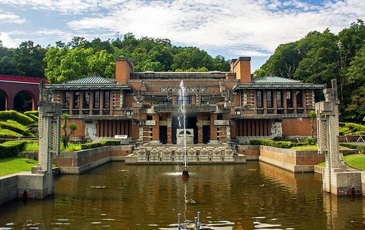
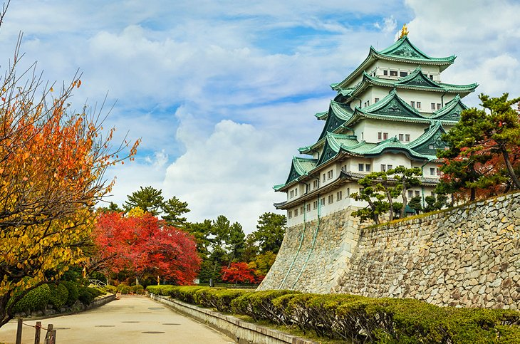
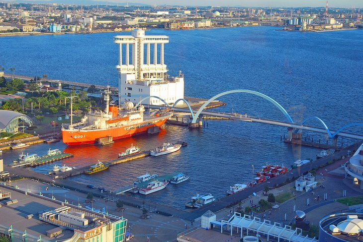
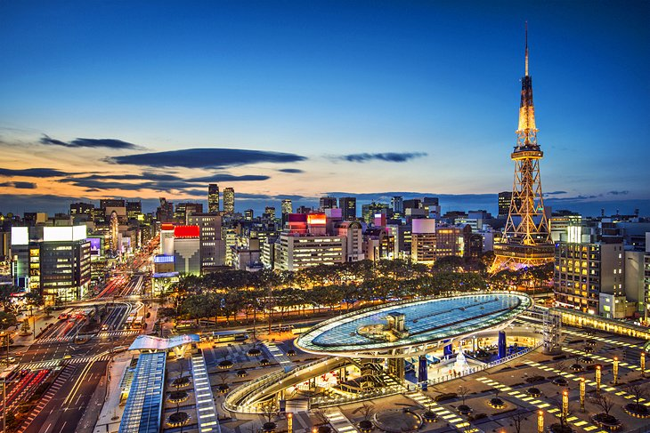
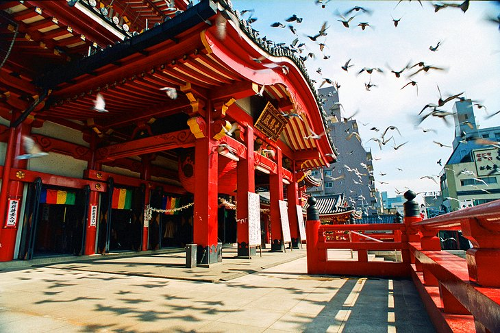

The Museum Meiji-mura (Meiji Village)
Just 24 kilometers north of Nagoya's city center,
the Meiji-mura Village Museum in Inuyama is an open-air museum featuring many fine examples
of Japanese architecture from the Meiji period of 1868 to 1912..
1/5

The Museum Meiji-mura (Meiji Village)
Nagoya Castle
Nagoya Castle was completely rebuilt in 1959 and remains one of the city's most important
(and visited) landmarks. Originally constructed in 1612, this splendid moated complex includes highlights such as its splendid 48-meter-tall main tower.
Famous for its two gilded dolphins (shachi) high up on its gables, the tower now houses a museum containing numerous art treasures,
including painted wall screens, sliding doors, and wall paintings mainly of the Kano school.
2/5

Nagoya Castle
The Port of Nagoya
In addition to being a bustling harbor,
the Port of Nagoya in Ise Bay has become something of a tourist attraction in recent years.
One of the most popular things to do, particularly for those traveling with kids, is visit the excellent Port of Nagoya Public Aquarium.
Highlights include its large collection of native marine life, many exotic species of fish from across the Pacific, as well as a popular dolphin show.
3/5

The Port of Nagoya
Nagoya TV Tower and Hisaya Ōdori Park
Some of the best views over Nagoya are from the 180-meter-tall Nagoya TV Tower (Nagoya Terebi-tō).
Built in 1954 in the heart of Hisaya Ōdori Park, the tower holds the record as the oldest electric wave tower in the country.
It also boasts two observation decks: the Sky Balcony (outdoors) at 100 meters, and the Sky Deck (indoors) at 90 meters.
Looking not unlike the famous Eiffel Tower in Paris, the site includes an informative exhibition about its history, as well as a restaurant.
4/5

Nagoya TV Tower and Hisaya Ōdori Park
The Temples of Ōsu
One of Nagoya's most popular districts is Ōsu, much visited for its many fine temples and shrines.
One of the most important is the Buddhist temple of Ōsu Kannon (Kitanosan Shinpuku-ji Hōshō-in),
built in the early 14th century in an area that turned out to be prone to flooding and moved to its current location around 1612.
4/5

Nagoya TV Tower and Hisaya Ōdori Park
❮
❯